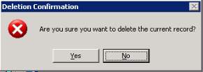

This task enables you to delete document information from the CAB_HOLD table.
The system displays information for the first expired document. If the auto-display feature is ON, the system also displays the corresponding document image in the viewer window.
The system prompts for confirmation to delete the record.

| - | Click Yes to delete the record. ICU moves the document entry to the CAB_DEL_ITEMS table. The entry is actually deleted when the Purge Service executes. |
| - | Click No to retain the record. |